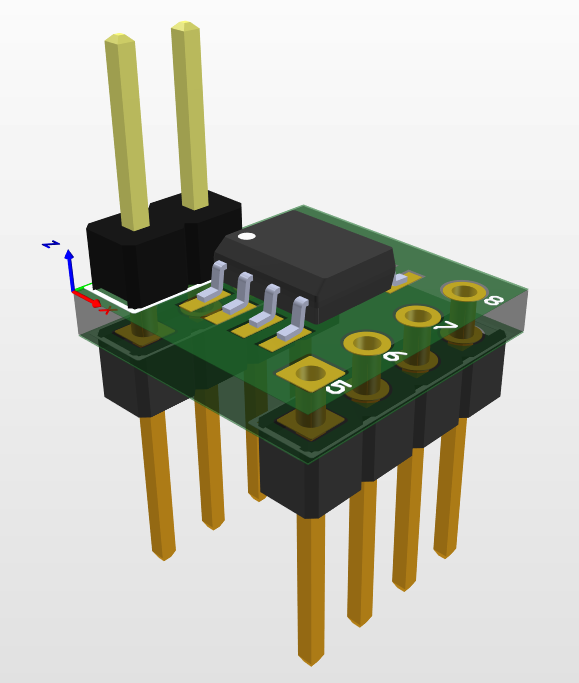
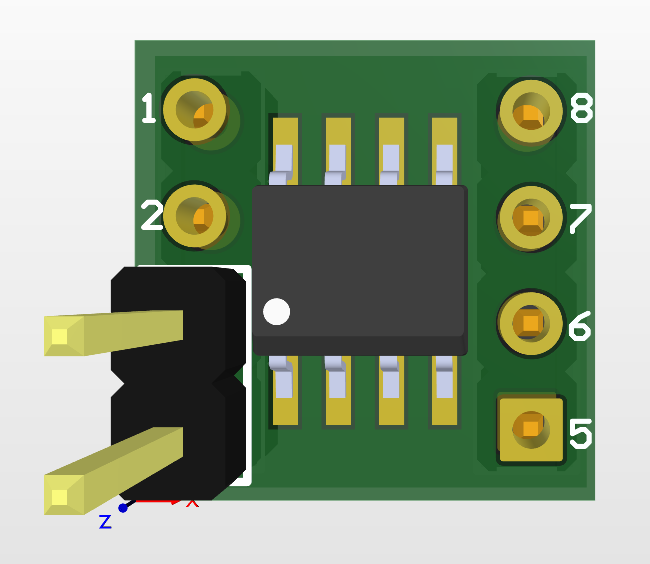
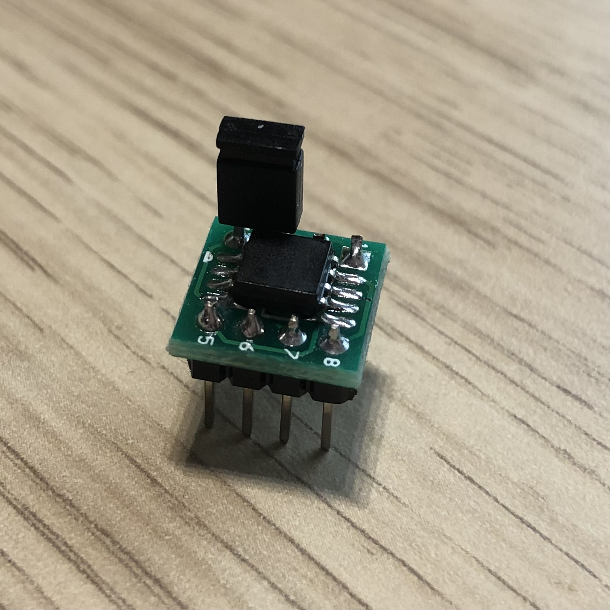
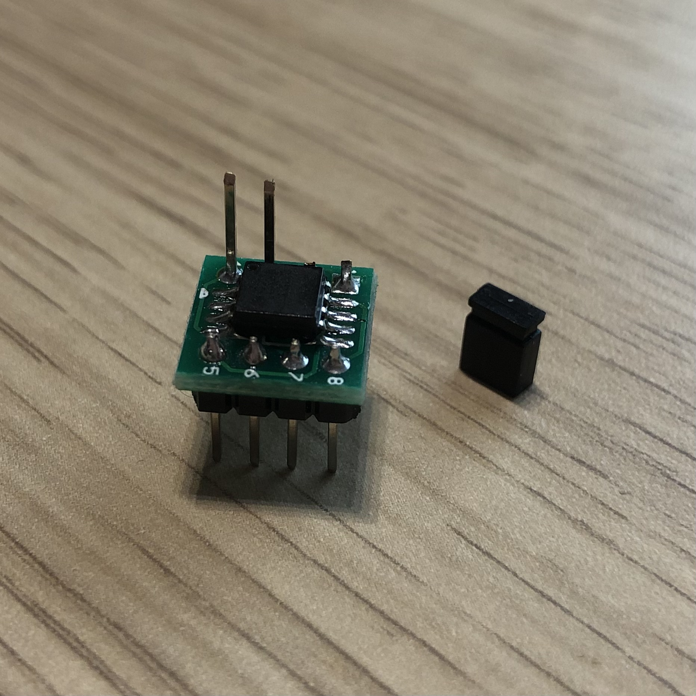

RTE v.0.5.3 with Asus KGPE-D16 connection

Power supply
Power to the Asus KGPE-D16 is delivered by a common PC power supply. Simply connect the power supply to ATX compatible connectors on the mainboard (SSIPWR1, SSI12V1, SSI12V2).
SPI
BIOS SPI flash is a socketed DIP-8. There is no simple way to attach to it with any tools. That is why we have thought about the qspimux made by Felix Held which can attach to various SPI modules footprints and sockets. The DIP-8 adapter is put into the DIP-8 socket on the mainboard, which allows attaching the qspimux SPI multiplexer. The multiplexer is responsible for switching between the external SPI lines and the mainboard lines routed to the external SPI flash chip. The external flash chip is soldered on a SOIC8 adapter, which is connected to the qspimux. The connection of the RTE and qspimux is as follows:
| RTE header J7 pin | qspimux J101 pin |
|---|---|
| 1 (VCC) | 2 (VCC_PROG) |
| 2 (GND) | 7 (GND) |
| 3 (CS) | 1 (CS_PROG#) |
| 4 (SCLK) | 6 (CLK_PROG) |
| 5 (MISO) | 8 (IO0_DI_PROG) |
| 6 (MOSI) | 3 (IO1_DO_PROG) |
| 7 (NC) | Not connected |
| 8 (NC) | Not connected |
Additionally, one has to tie the IO3_HOLD_PROG (qspimux pin 4) high, so connect it to the 3.3V permanently. Another additional GPIO is required to control the routing of SPI lines. The MUX_SEL (qspimux pin 9) decides whether the programmer is allowed to access the SPI flash or the mainboard. One more GPIO is used to control state of #WP of the flash chip by connecting GPIO to IO2_WP_PROG.
The proposed connections used:
- RTE GPIO400 to control MUX_SEL
- RTE GPIO401 to control IO3_HOLD_PROG
- RTE GPIO402 to control IO2_WP_PROG
Simple flashing script looks as follows:
# select flash <-> programmer
echo "0" > /sys/class/gpio/gpio400/value
# deassert SPI HOLD#
echo "1" > /sys/class/gpio/gpio401/value
flashrom -w firmware.bin -p linux_spi:dev=/dev/spidev1.0,spispeed=16000
# select flash <-> board
echo "1" > /sys/class/gpio/gpio400/value
Controlling state of #WP:
# configure direction of the pin
echo "out" > /sys/class/gpio/gpio402/direction
# deassert WP pin to disable hardware protection of status registers
echo "1" > /sys/class/gpio/gpio402/value
# assert WP pin to enable hardware protection of status registers
echo "0" > /sys/class/gpio/gpio402/value
| RTE header J10 pin | qspimux J101 pin |
|---|---|
| 1 (GPIO400) | 9 (MUX_SEL) |
| 2 (GPIO401) | 4 (IO3_HOLD_PROG) |
| 3 (GPIO402) | 5 (IO2_WP_PROG) |


qspimux schematic is available here
Serial
Asus KGPE-D16 has a DB9 serial connector for the debug UART. Connect it to the RTE via RS232 DB9 cable.

TPM
Asus KGPE-D16 has an LPC header for TPM or debugging. Since there is no other option to connect a TPM, we use the header for that purpose.
IMPORTANT: Use only TPM modules which match their pinout with the board's header! Using a spider web connection degrades the signal quality to the point where CPU cannot properly talk to TPM via LPC bus.

TPM modules that were tested and verified to work in 3mdeb lab with coreboot:
- ASUS TPM-L R2.0 module (chip Infineon SLB9665 TT 2.0)
- ASUS TPM 1.2 Rev 1.02h module (chip Infineon SLB9635 TT 1.2)
Power management
Asus KGPE-D16 provides a front panel pin header (PANEL1):

| RTE header J11 pin | Asus KGPE-D16 |
|---|---|
| 8 (OC buffer output) | PANEL1 pin 11 (PWR) |
| 9 (OC buffer output) | PANEL1 pin 17 (RESET) |
Additionally, connect one of the PANEL1 ground pins to one of the ground pins on RTE.
Manunal
For more details about the KGPE-D16, refer to the manual.
Theory of operation
Flashing
There are two RTEs connected to two Asus KGPE-D16 boards:
- 192.168.20.15
- 192.168.4.111
Both boards are equipped with the qspimux and a replaced flash chip (Winbond W25Q64FV 8MB). The flash chip is attached to the qspimux with an adapter available with qspimux. Flashing may be done via the commands shown earlier or the flash script which is present in the root directory of the RTE:
./flash.sh coreboot.rom
The script will automatically power off the board and update flash chip contents using flashrom. After the operation is finished the routing of SPI signals is restored to the platform.
The flash chip adapter
In order to provide an easy way to protect the SPI flash chip one may use a DIP-8 to SOIC-8 adapter with a special long pin header for WP pin jumper. It allows to use a SOIC-8 packaged flash in the DIP-8 socket and easily place a jumper to protect the flash. In order to assembly the adapter you will need
- the target SPI flash chip (we use wither Winbond W25Q64FV (8MB) or W25Q128JV (16MB)),
- male pin headers 2.54 mm pitch (6 pins)
- male long pin headers 2.54 mm pitch (2 pins) for the WP jumper
- SOIC-8 to DIP-8 adapter
- soldering station and the solder
The build shall look like this:
   
Such adapters are now available in our online shop for purchase. For more details how to enable SPI flash protection refer to SPI Flash protection page.
Power management
RTE can control the power
of the board with the RteCtrl command-line application, or with the web GUI
(RteCtrl) available at RTE's IP address
port 8000. Possible commands are:
./RteCtrl -pon # power on the platform
./RteCtrl -poff # force 5seconds power button power off
./RteCtrl -reset # briefly assert platform reset pin to perform reset
It is also possible to control the ATX power supply by disconnecting it from the power socket. For this special purpose, Sonoff S20 is used to remotely control the power socket activity. Sonoff IP to RTE IP mapping:
- RTE IP 192.168.20.15 - Sonoff IP 192.168.4.125
- RTE IP 192.168.4.111 - Sonoff IP 192.168.4.146
Sonoffs respond to rest API requests to enable or disable the power socket. Shell scripts have been added to RTE root directories to ease the control of power of the KGPE-D16 platform:
#!/bin/bash
SONOFF_IP=192.168.4.125
if [[ "$1" == "off" ]]; then
wget -q -O - http://$SONOFF_IP/switch/sonoff_s20_relay/turn_off --method=POST
elif [[ "$1" == "on" ]]; then
wget -q -O - http://$SONOFF_IP/switch/sonoff_s20_relay/turn_on --method=POST
elif [[ "$1" == "show" ]]; then
wget -q -O - http://$SONOFF_IP/switch/sonoff_s20_relay
echo -e '\n'
else
echo -e "\$1 == on|off|show|toggle\nEdit this script to set the sonoff ip."
echo -e 'Current state:'
wget -q -O - http://$SONOFF_IP/switch/sonoff_s20_relay
echo -e '\n'
fi
To turn off the power from the platform ./sonoff.sh off and to turn it on
./sonoff.sh on. Invoking the script without any argument will print the
current state of the switch.
Serial console access
A serial port is very useful in debugging and as a remote console of the system
on the platform. The serial port of KGPE-D16 is connected to the RTE's serial
port which can be accessed on RTE with /dev/ttyS1. One may use minicom
directly or take advantage of the ser2net service running on RTE which exposes
the serial port over the network. The serial port can be accessed remotely like
this telnet RTE_IP 13541, e.g.:
telnet 192.168.20.15 13541
Demo
A short demo presenting RTE capabilities with KGPE-D16:
Remote access
If you are interested in developing coreboot on KGPE-D16 and have some spare time, there is a possibility to obtain access to the hardware. Drop us an email to leads@3mdeb.com with a request.
Newsletter
If you are interested in this project, you can subscribe to the Dasharo KGPE-D16 Newsletter. If you are interested in the Dasharo in general, you are welcome to subscribe to the Dasharo Newsletter.
Gallery